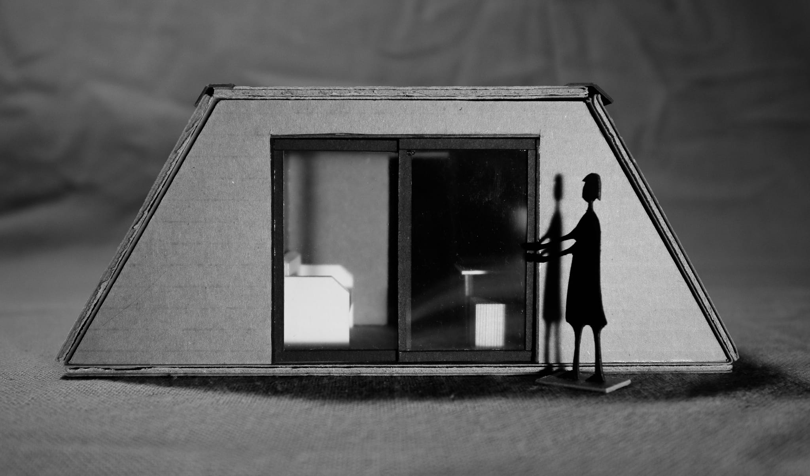
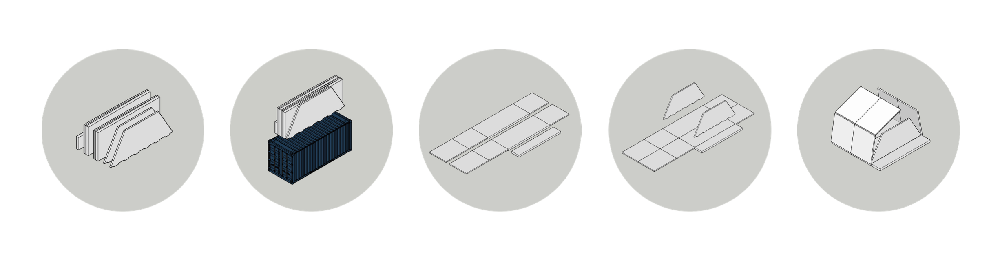
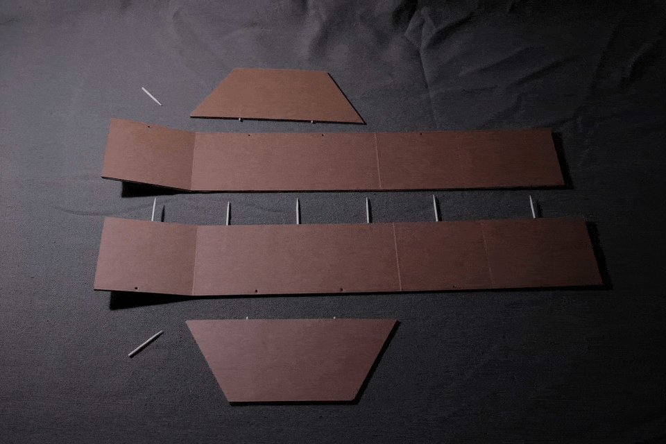
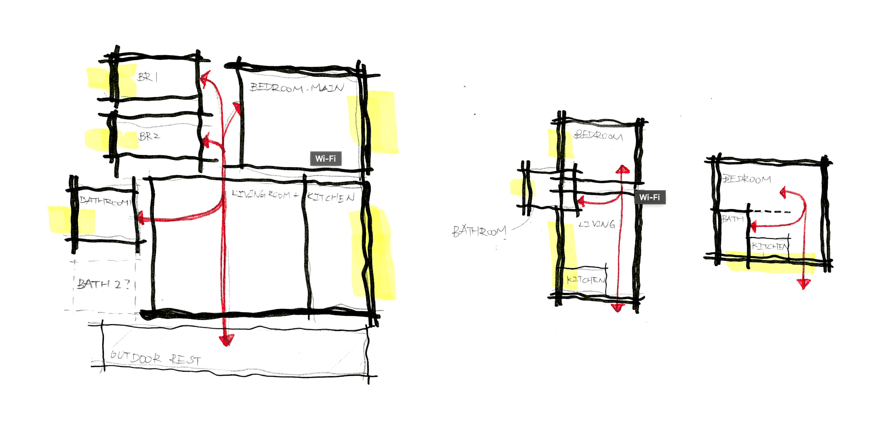
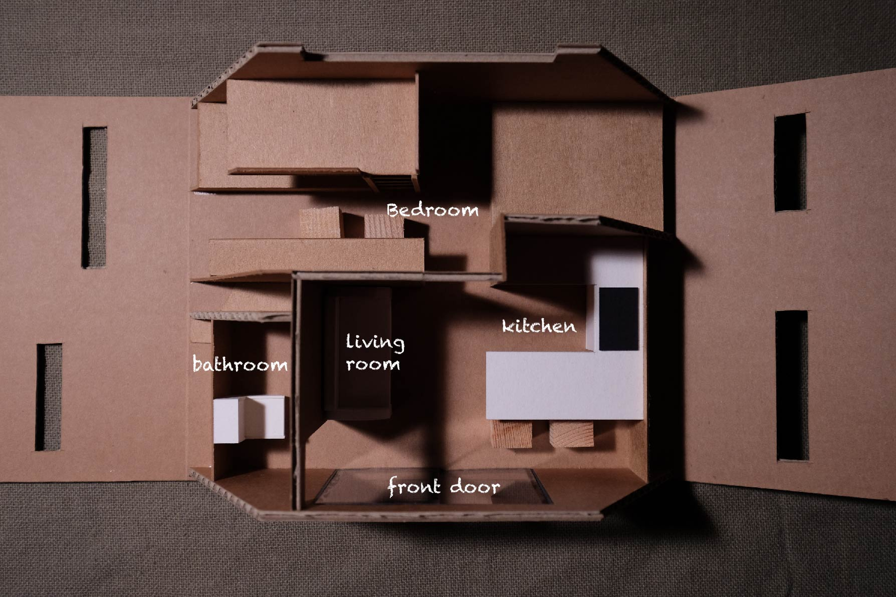
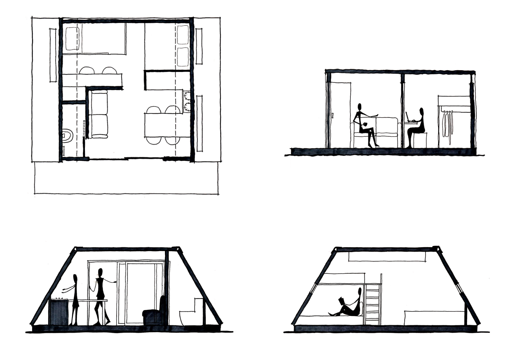

Fold the Refuge
Introduction
When natural disasters like typhoons, tornadoes, or earthquakes hit, buildings collapse and people displace. During the process of reconstruction, a temporary shelter may need to be built for the victims.
Fold the Refuge is formed by foldable components, which is designed for efficient delivery and quick construction. Therefore, when disasters happen, victims can move into Fold the Refuge, living with their loved families within a relatively short time.
Concept
1. Foldable
All the components of Fold the Refuge are designed to fit in a standard 20' container. Therefore, these components can be loaded to a container and shipped to the destination with a cargo truck.
After arriving at the destination, the three components which form the floor and the side walls are first concatenated. Later, the two components for the façade and the back are placed on the concatenated base. In the end, the rest of the wall can be folded and form the side walls and the ceiling.
(A construction demonstration.)
2. Extendable
The part forms the floor and side wall are extendable. Here, a 2-block structure for 4 people is demostrated. However, according to the amount of people, free space of the site, or other special needs, Fold the Refuge can be shrink to 1 block or expend to 3 or more.
Interior
(Interior sketch for 2-block / 1-block structure.)
Assume that a family with two parents and two children will live in this refuge for up to 6 months before the reconstruction finished. The living space is small but complete, including one bedroom, one bathroom, one living room with a kitchen.
